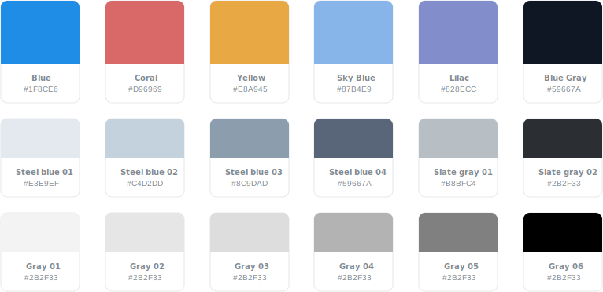
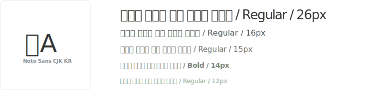
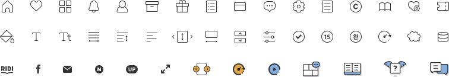
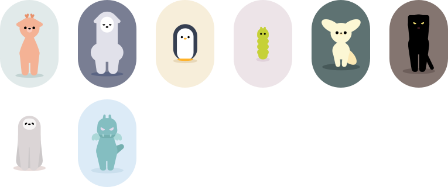
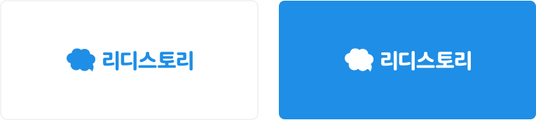
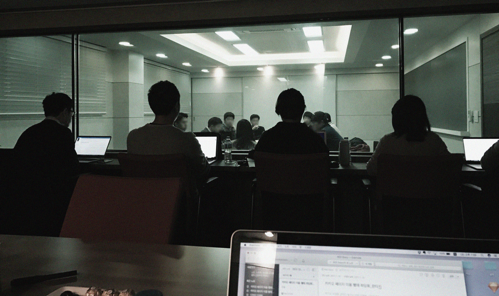

RIDI Story
리디스토리는 2017년 1월, 다양한 장르의 웹 소설 및 웹툰 콘텐츠를 이용하는 독자들을 위해 리디에서 론칭한 신규 서비스입니다. 리디북스에서는 점점 늘어나는 장르 독자들을 위해 다양한 콘텐츠를 제공하고 있었지만 처음부터 연재 콘텐츠 제공을 고려해서 만든 플랫폼이 아니었기 때문에 독자들이 느끼는 불편한 사용성을 해소하기 어려웠습니다. 그래서 사용자의 다양한 요구 사항을 충족시키기 위해 웹 소설 및 웹툰 전용 모바일 앱(Android, iOS)을 개발하기로 결정하였고 서비스 기획부터 UX/UI 디자인을 맡아 진행하게 되었습니다.
처음부터 하는 서비스 기획
구축 초기 단계에는 서비스의 이름도 정해지지 않아 임시로 이름을 붙였을 만큼 정해진 사항이 거의 없었습니다.
그래서 가장 먼저 사용자가 달성하고자 하는 근본적인 목표를 이해하고, 그 안에서 도출할 수 있는 다양한 컨셉과 아이디어를 고민했습니다.
“좋은 콘텐츠를 더 편리하고 쉽게 이용하는 것”
정해진 사용자의 목표를 바탕으로 PM과 논의 후 협의된 내용은 팀원 모두가 쉽게 이해할 수 있도록 바로 와이어 프레임으로 그려 사용성을 고민하는 단계를 거쳤고, 여러 시행착오를 통해 최적화된 화면 구성은 세부 기획 정의와 개발 구현 범위 협의 등의 과정을 거쳐 더 견고하게 완성되었습니다.
쉽고 편리한 UX/UI
리디스토리 개발이 시작될 당시에는 우리와 비슷한 서비스를 제공하는 플랫폼들이 이미 굳건히 자리를 잡고 있었고, 그렇기 때문에 사용자에게 익숙한 기존 플랫폼의 UX를 크게 벗어나지 않도록 해야 했습니다.
그래서 직관적이고 누구나 사용할 수 있는 UX/UI에 중점을 두면서 리디스토리만의 주요 컨셉도 적절하게 녹여내야 했는데, 이는 기획을 통해 구체화된 방향성으로 디자인을 풀어 보기로 했습니다.
1. 간결한 UI
가장 먼저 전체적인 디자인 컨셉을 잡아야 했습니다. 높은 채도의 컬러와 가독성이 높은 웹폰트, 일러스트레이션의 활용 등 기존의 리디 서비스에서 사용하지 않았던 요소들로 간결하고 군더더기 없는 UI를 제공하고자 했습니다.
Color Scheme
Typography
Icons
Illustrations
Logo
App Icon
2. 콘텐츠 탐색이 쉬운 홈 화면
서비스의 첫인상이라고 할 수 있는 홈 화면의 경우 어떤 화면이 우리 서비스에 적합할지 오랜 기간 동안 다양한 방향성을 고민했고, 결과적으로 사용자의 입장에서 조금 더 익숙하고 사용성이 높은 홈 화면 디자인으로 결정되었습니다.
특히 장르 독자의 특성상 표지 외에도 작가 명, 한 줄 소개와 같은 데이터로 콘텐츠를 소비하는 경우가 많았기 때문에 UI를 구성할 때 이러한 정보 요소들이 잘 보이면서 서로 부딪치지 않도록 하는 것이 중요했습니다.
홈 화면 방향성 회의에서 결정된 와이어프레임

3. 최적화된 뷰어 시스템
뷰어는 리디북스와 동일한 EPUB 뷰어를 적용하여 데이터의 소모를 최소화하였고 사용자가 직접 글 읽기에 최적화된 환경을 조정할 수 있도록 글꼴, 글자 크기, 문단 너비, 줄 간격, 페이지 넘김 방식, 다크 테마 모드 등의 다양한 설정 기능을 제공하였습니다.
또한 연재 콘텐츠는 작품의 호흡이 짧기 때문에 뷰어 내에서 이러한 흐름이 끊어지지 않도록 UX를 잘 고려해야 했습니다. 그래서 사용자가 뷰어를 벗어나지 않고도 해당 작품과 관련된 기능을 이용할 수 있도록 설계하였습니다.

4. 리디스토리만의 주요 서비스
앞서 말했듯 이미 자리를 잡고 있는 기존 웹 소설 플랫폼 시장에 진입하기 위해서는 기본에 충실한 기능 외에도 리디스토리만의 강점이 필요했습니다. 그래서 여러 가지 방안을 도모한 결과 사용자의 지속적인 유입과 모든 사용자가 다양한 콘텐츠를 골고루 접할 수 있도록 동영상 트레일러, 기다리면 무료, 럭키박스 등 리디 스토리의 컨셉이 녹아있는 주요 서비스를 제공하였습니다.

5. 친절함이 모여 편리함이 되도록
서비스를 처음 이용하는 사용자도 어렵지 않게 이용할 수 있게 디자인하고, 필요할 때에는 가이드와 서비스의 상태 정보를 제공하여 사용자가 혼란스러워하거나 이유 없이 기다리는 상황을 겪지 않도록 사용자 관점에서 고려하였습니다.

로딩 시간동안 오류 화면처럼 보이지 않도록 플레이스홀더 이미지를 노출하거나 사용자가 기능을 쉽게 이해할 수 있도록 가이드를 제공한다.
촉박한 일정 속에 혼자 모든 화면을 디자인해야 했기 때문에 주요 화면을 설계할 때에는 가능한 여러 타입의 디자인을 만들어 사용성을 테스트해보았고, 의견이 필요한 경우 다양한 사람들과 상의하여 디자인을 개선하는 등 많은 노력이 필요했습니다.
개발 리뷰 및 UT 진행
디자인 및 개발이 마무리된 후에는 개발 리뷰를 통해 의도한 대로 개발이 잘 되었는지 디테일한 부분을 확인하고, 버그가 발생한 경우 빠른 대응이 가능하도록 버그 리포트를 작성하는 등 론칭을 위한 막바지 작업을 진행하였습니다.
이후 안정화 된 베타 버전의 앱을 통해 제품 제작과 관련이 없는 내부 인원을 대상으로 내부 UT(User Test)를 진행 하였는데 미리 확인하고 싶은 내용을 이슈 리스트로 작성하여 사용자가 해당 기능을 잘 인지하고 있는지, 메뉴 이동 시 플로우가 헷갈리지는 않은지 등의 세밀한 내용을 확인할 수 있었습니다. 다행히 UT에서 큰 이슈 사항은 발견되지 않았고, 마침내 안드로이드 앱이 론칭 되었습니다.

론칭 후에도 계속되는 사용성 개선
서비스 론칭까지 주어진 기간은 4개월. 이 기간 안에 기획, 디자인, 개발이 모두 완료되어야 했습니다. 초반에 기획 했던 여러 가지 기능들은 일정이 딜레이 되면서 우선순위에 밀려 점점 후 순위로 밀려 났고, 결국 론칭 시점에 반영되지 못했습니다. 그렇기 때문에 론칭 후에 해야 할 일이 더 많았습니다.
후 순위로 밀려 났던 기능들을 마저 반영해야 했고 디자인 디테일 개선, iOS 및 태블릿 디자인 대응, 그 외에 실시간으로 들어오는 사용자들의 피드백을 체크하고 반영하는 일까지 해야 했습니다. 마케팅 차원에서 빠르게 진행해야 하는 일이 생기는 경우도 빈번했는데, 이 시기에는 여러 사람에게서 동시다발적으로 태스크가 생성되었기 때문에 체크리스트를 작성하고 작업의 우선순위를 확실히 파악하는 것이 중요했습니다.
론칭 이후 사용성 개선 작업 체크리스트
다행히 리디스토리는 웹앱으로 개발되었기 때문에 이러한 수정 사항들을 빠르게 실 서비스에 적용할 수 있었고 사용자는 앱을 업데이트해야 하는 번거로움 없이 변경된 서비스를 이용할 수 있었습니다.
론칭 후 1년, 그리고 서비스 종료
론칭 후 1년 동안 빠르게 기능들이 추가되었고 어느덧 서비스를 이용하는 데에 불편함을 느끼지 않을 정도로 안정화되었습니다. 하지만 서비스를 계속 운영할 만큼의 비즈니스 가치가 측정되지 않았고, 결국 론칭 1년 만에 서비스 종료의 수순을 밟게 되었습니다.
“디자이너는 디자인 중인 제품의 전체 수명을 폐기한 후까지도 주의해야 한다.”
<도널드 4 about face 노먼의>
디자이너는 자신이 디자인한 서비스의 종료 과정도 고려해야 합니다. 서비스 종료는 사용자의 입장에서 당황스러운 일이고, 유료 콘텐츠를 보유한 사용자의 경우 보상 과정에 불편함이 없도록 해야 하기 때문입니다.
리디스토리는 서비스 종료 안내 후 홈페이지를 통해 사용자가 리디북스 계정으로 보상 및 이관을 받을 수 있도록 준비하였고, 진행 사항 및 내역을 상세히 확인할 수 있도록 하였습니다.

마치며
리디 내에 스타트 업이라고 할 만큼 팀원 모두가 서비스를 위해 매일매일 같은 마음으로 빠르게 달려왔고 아쉬운 서비스 종료까지 1년 4개월 동안 많은 일이 있었습니다.
서로 다른 언어를 사용하는 디자이너와 개발자가 협업하는 과정에서 커뮤니케이션이 원활하지 않아서 생기는 문제도 있었고, 정해진 디자인 프로세스가 없어 정립해가는 과정 중 시행착오도 많이 발생했습니다.
이 문제를 해결하기 위해 논의가 필요할 때에는 되도록 눈으로 확인할 수 있도록 시안을 준비했고, 주요 이슈 사항일 경우 가이드 및 프로토타입을 전달하여 의견을 조율하였습니다. 또한 스크럼을 통해 서로 자유롭게 의견을 주고받았고 그러면서 자연스럽게 서로의 언어를 이해하게 되었습니다.
스플래시 애니메이션 프로토타입
스플래시 애니메이션 가이드
혼자 서비스의 UX/UI 디자인을 맡아서 한다는 것은 디자인에 대한 자율도가 높다는 장점이 있지만, 이에 대한 부담과 책임도 따르게 됩니다. 하지만 리디스토리를 통해 개발자와의 협업, 사용자 경험 개선, 비즈니스 목표 등과 관련된 여러 가지 문제 해결의 방법을 다각도에서 바라볼 수 있었고, 다양한 역할을 맡아서 해야 했기 때문에 많은 경험을 할 수 있었습니다.
직접 작성한 업데이트 노트. 이 시기에는 다른 서비스의 업데이트 노트를 항상 눈여겨보거나 관련 아티클을 찾아 참고하기도 했다.
(*
As a Designer I want better Release Notes
)

웹 소설 서비스의 다양한 이용행태를 리서치하기 위해 진행했던
<웹 사용자 서비스 소설 이용행태>좌담회.
다양한 사용자의 세부적인 니즈를 알 수 있었다.
또, 디자이너로서 사용자들의 피드백을 실시간으로 들을 수 있었다는 점은 서비스에 대한 애착과 동기부여를 지속적으로 가지고 운영할 수 있었던 계기가 되기도 했습니다. 서비스가 종료된 것은 매우 안타까운 일이지만 하나의 서비스를 론칭하고, 보다 좋은 서비스를 제공하기 위해 했던 다양한 시도들과 사용자 경험을 긍정적으로 만들기 위해 고민했던 지난 1년여간의 시간은 스스로에게도 굉장히 의미 있는 시간이었습니다.
웹 소설 서비스의 다양한 이용행태를 리서치하기 위해 진행했던
<웹 사용자 서비스 소설 이용행태>좌담회.
다양한 사용자의 세부적인 니즈를 알 수 있었다.
다양한 사용자의 세부적인 니즈를 알 수 있었다.